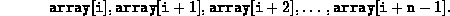

Data Structures and Algorithms
with Object-Oriented Design Patterns in Java
Data Structures and Algorithms
with Object-Oriented Design Patterns in Java
Sorting algorithms and sorters are covered in detail in Chapter  .
In this section we consider a divide-and-conquer sorting algorithm--merge sort .
Given an array of n items in arbitrary order,
the objective is to rearrange the elements of the array
so that they are ordered from the smallest element to the largest one.
.
In this section we consider a divide-and-conquer sorting algorithm--merge sort .
Given an array of n items in arbitrary order,
the objective is to rearrange the elements of the array
so that they are ordered from the smallest element to the largest one.
The merge sort algorithm sorts a sequence of length n>1
by splitting it into to subsequences--one of length  ,
the other of length
,
the other of length  .
Each subsequence is sorted and then the two sorted sequences
are merged into one.
.
Each subsequence is sorted and then the two sorted sequences
are merged into one.
Program defines the method mergeSort which
takes three arguments,
array, i, and n.
The method sorts the following n elements:

The mergeSort method calls itself
as well as the merge method.
The purpose of the merge method is to merge two sorted sequences,
one of length  ,
the other of length
,
the other of length  ,
into a single sorted sequence of length n.
This can easily be done in O(n) time.
(See Program ).
,
into a single sorted sequence of length n.
This can easily be done in O(n) time.
(See Program ).
Program: Divide-and-conquer example--merge sorting.
The running time of the mergeSort method
depends on the number of items to be sorted, n.
Although Program works correctly for arbitrary values of n,
it is much easier to determine the running time
if we assume that n is a power of two.
In this case,
the running time is given by the recurrence
Equation is easily solved using repeated substitution:
Setting  gives .
gives .
 Copyright © 1998 by Bruno R. Preiss, P.Eng. All rights reserved.
Copyright © 1998 by Bruno R. Preiss, P.Eng. All rights reserved.